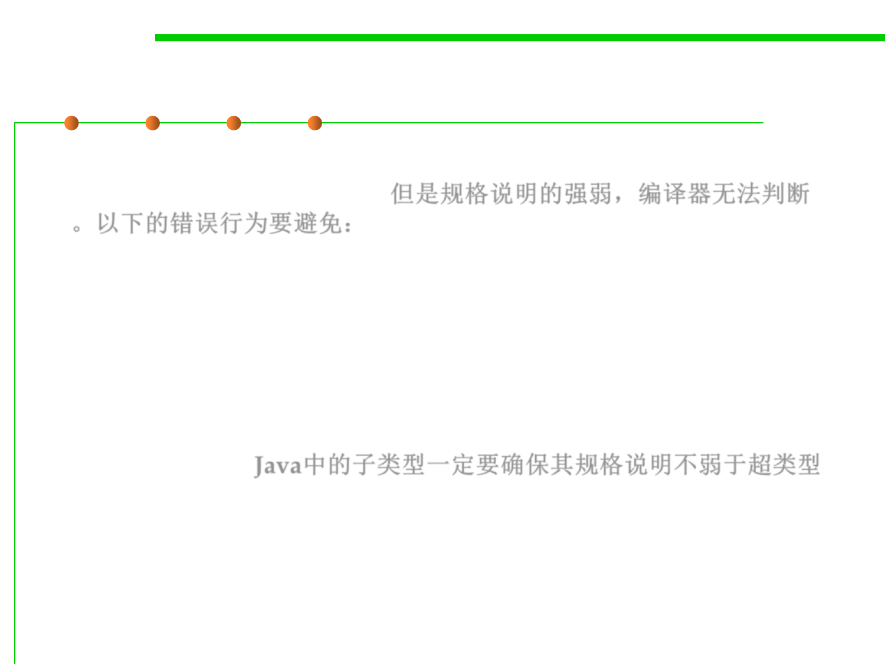

Static checking on subtypes
3.4 Object-Oriented Programming (OOP)
▪ But the compiler cannot check that we haven’t weakened the
specification in other ways: 但是规格说明的强弱，编译器无法判断
。以下的错误行为要避免：
– Strengthening the precondition on some inputs to a method
– Weakening a postcondition
– Weakening a guarantee that the interface abstract type advertises to
clients.
▪ If you declare a subtype in Java (e.g., implementing an interface),
then you must ensure that the subtype’s spec is at least as strong as
the supertype’s. Java中的子类型一定要确保其规格说明不弱于超类型